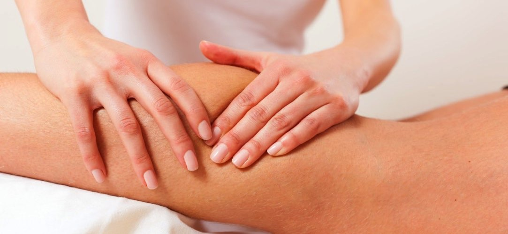
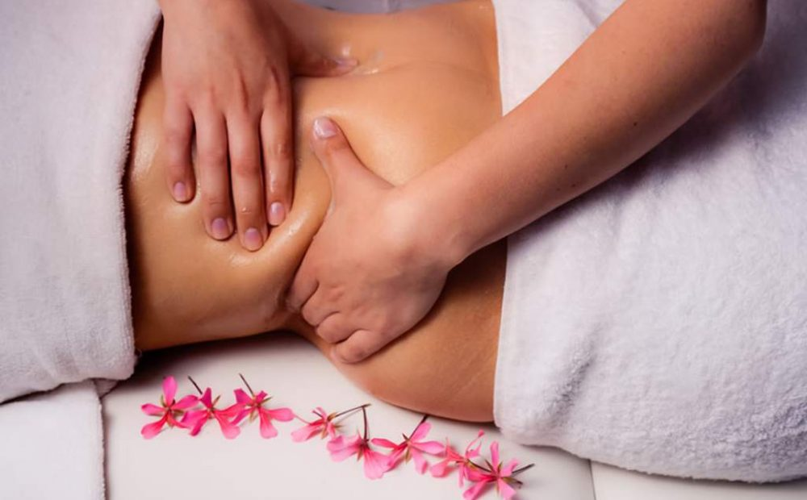
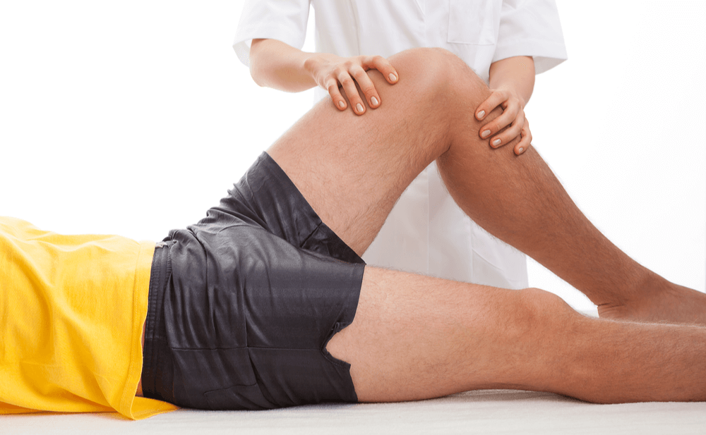
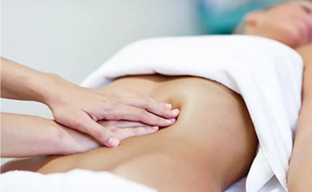
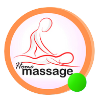
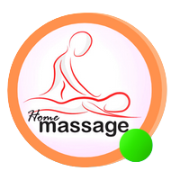

¿Tipos de masaje que existen y para que sirve?
¿que es un masage?
masaje es la actividad que consiste en frotar, presionar o golpear con un cierto ritmo e intensidad diversas partes del cuerpo con fines terapéuticos, estéticos o deportivos.
Por ejemplo: “¿No me das un masaje? Me duele mucho la espalda”, “Quiero ir a un spa para que me hagan masajes”, “Siempre tuve dolores en los pies, pero los masajes me ayudan a sentirme mejor”
El masaje puede considerarse como una técnica, un arte o hasta una ciencia, ya que implica cuestiones biológicas, médicas, psicológicas y de otros ámbitos. Se considera que los masajes pueden ayudar
a la relajación muscular, a aliviar dolores y a inducir el sueño. Por eso es importante hacerse un masage.
¿Que tipos de masajages existe?
Actualmente existe una gran variedad de tipologías de masaje dentro del mundo de la estética. Cada masaje utiliza técnicas y herramientas diferentes y además tiene un objetivo diferente como relajar los
músculos, aliviar el dolor, estimular la circulación, drenar líquidos, etc.
Dependiendo de sus funcionalidades y características nos encontramos con masajes de tipo estético o masajes terapéuticos. ¡Vamos a ver cuáles hay!
Masajes estéticos o relajantes
Masaje circulatorio

El masaje circulatorio tiene el objetivo de activar el riego sanguíneo y linfático para favorecer el intercambio celular. Con esta técnica movilizamos los líquidos corporales y favorecemos la eliminación de
toxinas ya que se consigue que estas alcancen los órganos y ganglios encargados de suprimirlas. Está indicado para todo tipo de personas pero, especialmente, para aquellas que sufren un trastorno circulatorio
o tienen retención de líquidos, presencia de celulitis, dolores de cabeza, obesidad o insomnio. Dependiendo de la situación del cliente, el método cambia según qué sistema trabajemos: el sistema venoso, arterial o linfático.
Masaje relajante

El masaje relajante es una técnica compuesta de diferentes métodos manuales suaves y rítmicos con la finalidad de relajar y descontracturar la musculatura afectada. Es un masaje enfocado en las zonas corporales donde
generalmente se acumula tensión muscular como lo es la espalda y cuello, además de buscar el estado de relajación y salud mental en la persona que se le es aplicado.
El objetivo principal de un masaje relajante está orientado en mejorar el bienestar de la persona, esto involucra eliminar las tensiones musculares producto del estrés diario, disminuir el dolor, mejorar la circulación
aumentando el aporte de oxígeno en los tejidos, conseguir un estado de relajación mental, a disminuir los síntomas de ansiedad, restaura la armonía interna que se ha perdido aumentando el autoestima y la energía indispensable para el cuerpo.
Masaje modelador

Los Masajes Reductores y Moldeadores son tratamientos que se realizan con el fin de disminuir medidas, y las celulitis. Están indicados para aquellas personas que no desean someterse a ningún tipo de procedimiento invasivo o que requiera de
quirófano. Los resultados son visibles si se realizan con una secuencia de 2 a 3 veces por semana.
- Por medio de los Masajes MOldeador se logra reducir medidas localizadas.
- Se obtiene buenos resultados en cuanto a la circulación mejorando los (calambres, líquidos retenidos, inflamación)
- Ideal para la celulitis.
- Gracias a estos tratamientos reductores, se mejora el aspecto de la piel, obteniendo una piel sana y suave.
Masaje reafirmante

Este tratamiento esta formulado para tonificar y reafirmar el cuerpo, especialmente diseñado para eliminar toxinas
y reducir la retención de agua, mientras que restaura la tonificación del musculo. Cuenta con múltiples beneficios como:
- reafirmar los tejidos
- estimular el colágeno y la elasticidad
- tonifica las fibras de los músculos
- previene y disminuye la acumulación de depósitos de celulitis
Además, de suavizar la piel del cuerpo, retira las células de depósitos grasos y tóxicos de la piel a través del sistema linfático. Es utilizado en cualquier zona del cuerpo en donde necesites reafirmar.
Masajes terapéuticos
Masaje deportivo

En la vida de un deportista suelen ser comunes las lesiones y las dolencias frecuentes debido a un mal entrenamiento o a un exceso de sobrecarga en la intensidad de los mismos.
el masaje deportivo es aquel conjunto de técnicas de masaje cuyos objetivos son preparar los tejidos para un futuro esfuerzo, prevenir las lesiones futuras, recuperarse de las lesiones
y mejorar el estado de los tejidos de los músculos después de una gran competición. Es decir, que el público objetivo al cual se dirige este tipo de tratamiento son los deportistas que se están preparando
para una competición, que acaban de realizar un esfuerzo muscular intenso y aquellos con lesiones o dolencias que necesitan ser reparadas. Sin embargo, el masaje deportivo también puede utilizarse como
mantenimiento, siendo una parte esencial en las rutinas de un deportista.
Alguno tipos de masajes deportivos son:
- Masaje recuperador
- Masaje de mantenimiento
- Masaje pre-competición
Masaje de Drenaje

es u suave masaje que consiste en presionar la piel con movimientos en direcciones concretas basadas en la estructura del sistema linfático. Esto ayuda a mejorar el drenaje de los fluidos y de las sustancias de desecho
a través de los canales apropiados. Son movimientos suaves, lentos y repetitivos. Normalmente, dura 1 hora o incluso más.
Este masaje puede favorecer el retorno venoso en personas que sientan las piernas cansadas o hinchadas y con varices. Ahora bien, se recomienda acompañarse de otras medidas que se engloban dentro de los hábitos de una
vida saludable como, por ejemplo: caminar 30 minutos al día, no llevar ropa ajustada y seguir una dieta variada rica en frutas y verduras.
Reflexología

La reflexología podal y manual es una técnica de masaje en la que se aplica presión en puntos específicos de los pies y de las manos para la relajación y terapia de regiones internas y externas del cuerpo. En nuestros pies
y manos hay miles de terminaciones nerviosas y a través de esta técnica manual podemos estimularlas.
ayuda a mejorar el estado físico y psíquico como terapia complementaria al tratamiento fisioterapéutico, y que es cada
vez más demandada por los clientes y pacientes debido a los grandes beneficios de la reflexología, en los pies existen gran cantidad de terminaciones nerviosas que se interrelacionan con el organismo e influyen en el mismo.
Con la estimulación adecuada de los pies se puede enviar mensajes a lo largo del sistema nervioso a todas las zonas del cuerpo y el cerebro `ya que las zonas reflejas del pie son de 5 a 20 veces más sensibles que los órganos mismos.
principales beneficios de la Reflexología son:
- Alivia el cansancio y la fatiga
- Equilibra mental y emocionalmente
- Relaja el cuerpo y la mente
- Reduce el estrés

 
